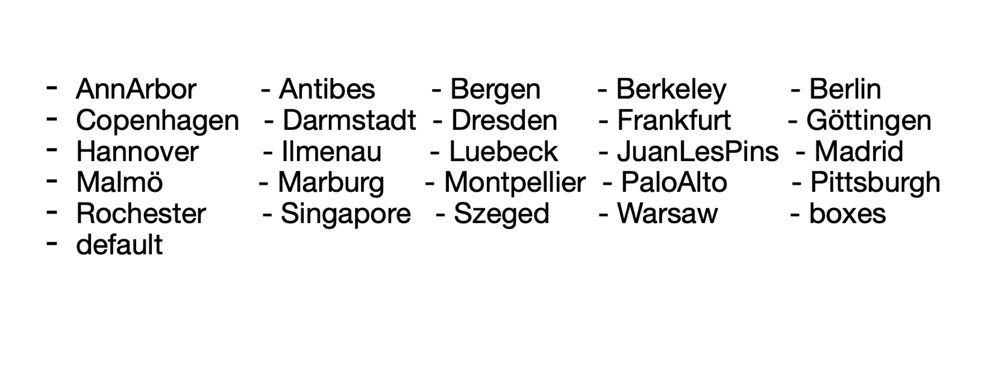

BEAMER
Styling features
Themes
You can set different themes to your presentation and there are lots of them avaliable.
There is also the possibilty to change the colors, outer themes or inner themes. The variaty of themes are the following:

And the line you can add to your code to enable che change of the time is this:
\usetheme{Berlin}Colors
You can set different color to your presentation and there are lots of them avaliable.
The variaty of colors are the following:
Of course there is the possibility to set your own color:
Page written by Davide Trupia